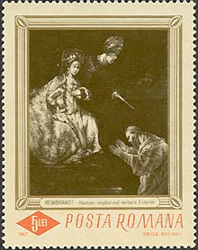
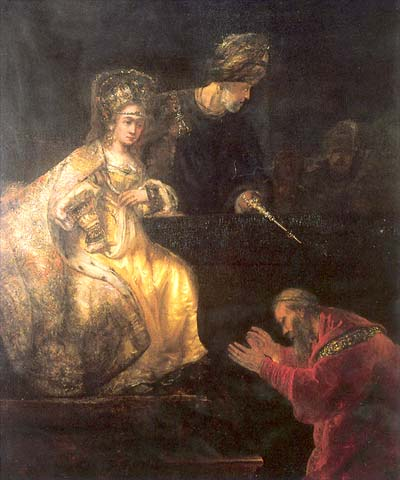
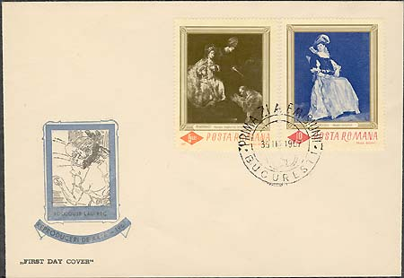

|
The National Museum of Art of Romania Haman Asking Esther's Forgiveness |
Rembrandt Harmensz van Rijn (1606 - 1669) and workshop. Oil on canvas. 236 x 186 cm. In the National Museum of Art of Romania, the Department of European Art - Paintings and Sculptures. The Department's holdings of European Paintings were largely amassed between 1948 and 1951. The starting point was the return of the Picture Gallery of King Carol I (1881-1914) from the Peles Castle to the Bucharest palace in 1948. The Picture Gallery and other works of art which had previously belonged to various royal collections were nationalized through an act of the Council of Ministers of the then communist Romania.

The authorship of this painting was finally agreed after its investigation and restoration in Holland in 1990-1991 concluding two centuries of disputes on the topic. The canvas, largely completed by Rembrandt in 1635-1636,
was abandoned by the artist for almost two decades until one of the students or followers active in the master's studio approached it again and finished it sometime around the 1660s.

The subject of the painting relies on a story in the Old Testament (Esther 2:7). Haman, a military leader in the kingdom of Babylon during the reign of King Ahasuerus, bad planned to exterminate all the Jews who lived in exile there. Haman's vile plan was discovered by Mordecai, the uncle of the king's wife Queen Esther, herself of Jewish parentage. The painting shows Haman brought before the Queen and begging her mercy.

Queen Esther's garments are highly illustrative of Rembrandt's style and masterly accomplishment: the gold ochre of her dress suggests the precious quality of a goldsmith's work. Esther's figure is almost radiant by contrast to the dark background, worked out in an interplay of light and shadow, equally typical of the great master's manner. (After Mariana Dragu).
The stamp was issued on March 30, 1967, in a set of six stamps. This was the second Romanian set of paintings that was issued in big format. The print run of the stamp was of 320,000 pieces. The stamps were designed by I. Druga and G. Bozianu. All stamps in the set are covered by a finish. The painting itself is shown in a monochrome olive color. For this reason, in our opinion, it should be one day reissued in its original colors.
For some supplementary information please move the mouse pointer over the images.
| Published:
06/29/2002. Revised:
07/29/02. Copyright © 2002 by Victor Manta, Switzerland. All rights reserved worldwide. |